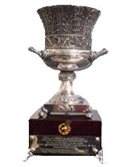
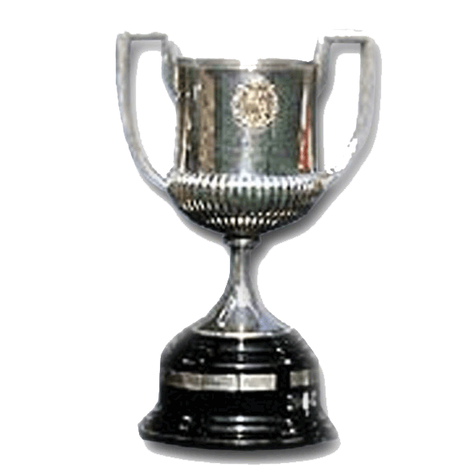

Champions League
1991-92,
2005-06,
2008-09,
2010-11,
2014-15

FIFA Club World Cup
2009-10,
2011-12,
2015-16
European Cup Winners' Cup
1978-79,
1981-82,
1988-89,
1996-97

Fairs Cup
1957-58,
1959,60,
1965-66

European Super Cup
1992-93,
1997-98,
2009-10,
2011-12,
2015-16

Latin Cup
1948-49,
1951-52,
Spanish League Championship
1928-29,
1944-45,
1947-48,
1948-49,
1951-52, 1952-53, 1958-59, 1959-60, 1973-74,
1984-85, 1990-91, 1991-92, 1992-93, 1993-94, 1997-98, 1998-99, 2004-05, 2005-06, 2008-09, 2009-10, 2010-11, 2012-13, 2014-15, 2015-16, 2017-18, 2018-19

Copa del Rey
1909-10,
1911-12,
1912-13,
1919-20,

Spanish Super Cup
1983-84,
1991-92,
1992-93,
1994-95

Spanish League Cup
1982-83,
1985-86
Catalan League Championship
1901-02,
1902-03,
1904-05,
1908-09

Eva Duarte Cup
1948-49,
1951-52,
1952-53